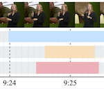

Click on a dataset category to expand/collapse it.
Click here to expand ALL categories. Click here to collapse ALL categories.
|  |
Aligning Subtitles in Sign Language Videos |
|
Aligning Subtitles in Sign Language Videos
We propose a Transformer architecture to temporally align asynchronous subtitles in sign language videos. |
.jpg) |
Read and Attend: Temporal Localisation in Sign Language Videos |
|
We show that the ability to localise signs emerges from the attention patterns of the Transformer sequence prediction model. |